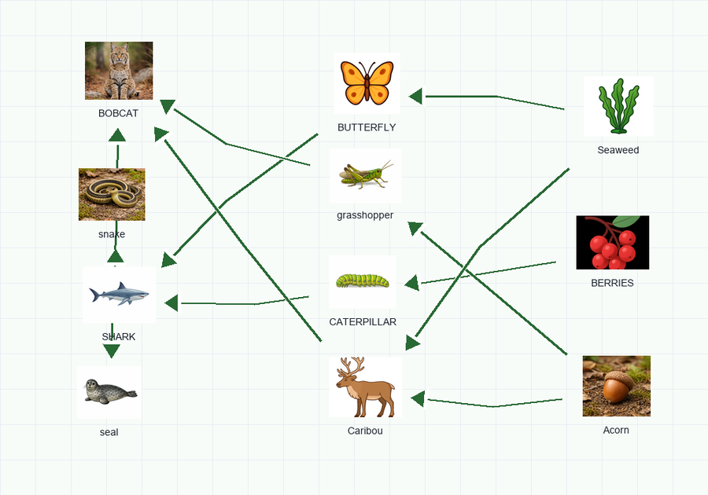
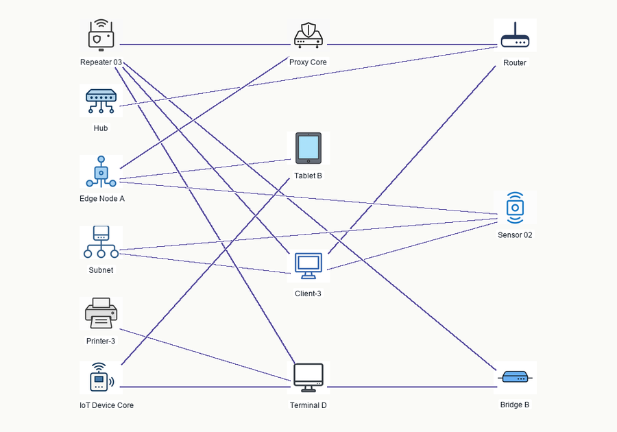
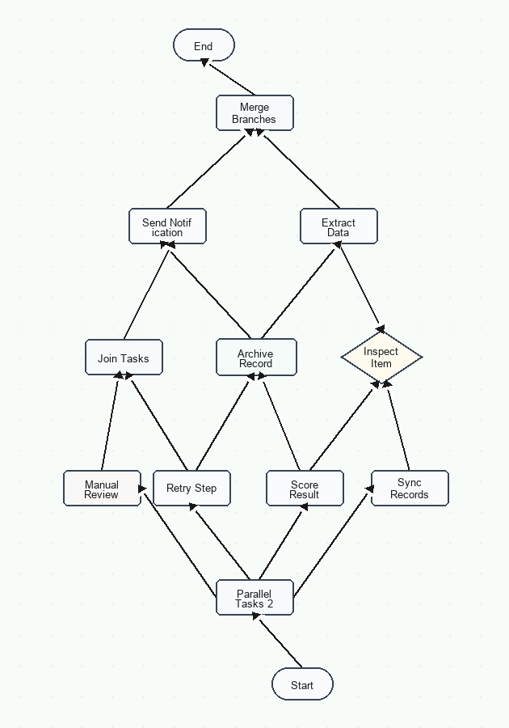
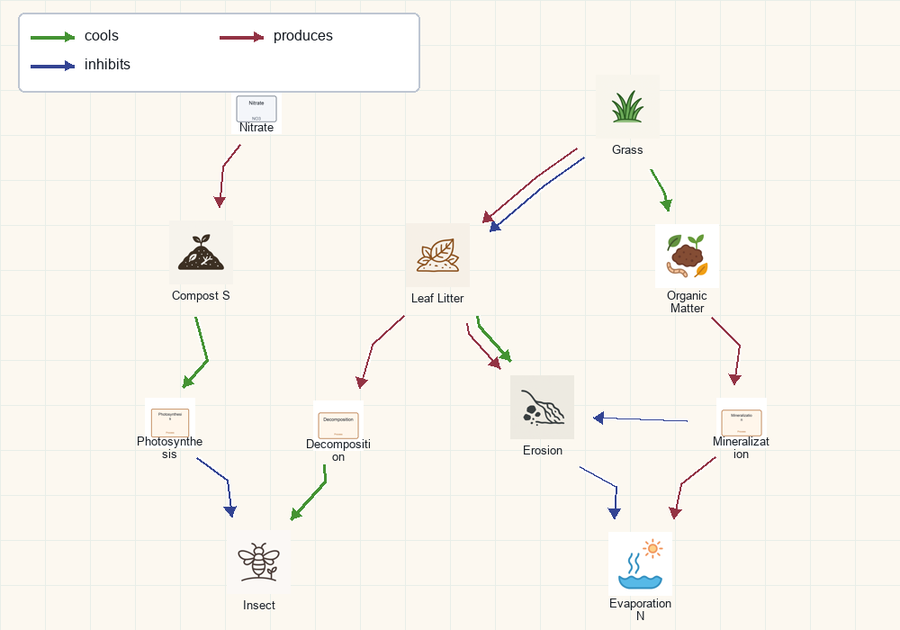
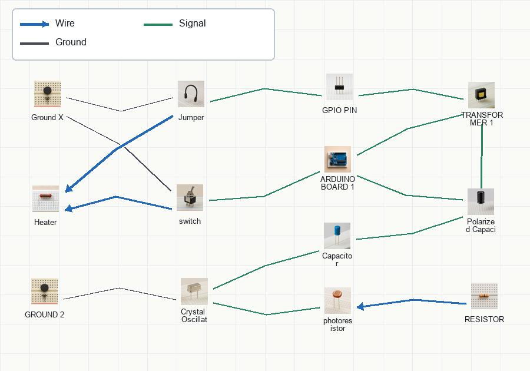
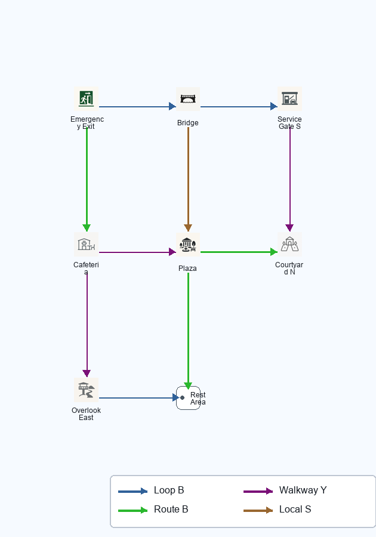
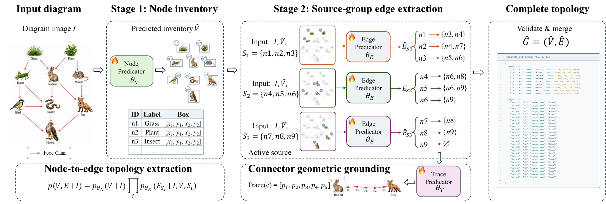

Knossos and Ariadne: Benchmarking and Learning Complete Diagram Topology Extraction with Vision-Language Models
1Rutgers University2Meta3NEC Labs America






Abstract
Structural diagrams are widely used to represent complex systems and relational information across scientific, engineering, procedural, and spatial domains. Recent vision-language models (VLMs) have become increasingly capable of recognizing diagram elements and reasoning about their content, while complete diagram topology extraction remains comparatively underexplored. In this paper, we study diagram-to-graph topology extraction: extracting all diagram entities and the complete relations among them.
To enable large-scale supervised training and systematic evaluation of this task, we introduce Knossos, a benchmark of 19,200 diagrams across six diverse domains, with 245,179 nodes and 439,740 edges. Its symbolic generation process provides exact alignment between rendered diagrams and annotations of complete topology, relation types, and connector geometry. To address the modeling challenge of complete topology extraction, we also present Ariadne, a structured framework that decomposes the task into node inventory extraction and source-conditioned edge prediction.
Extensive experiments show that training on Knossos substantially improves complete topology extraction in smaller open-source VLMs. Ariadne further improves over one-step extraction under matched supervision, demonstrating the additional benefit of structured decomposition. It achieves the highest average Edge F1 among the evaluated methods on Knossos, while both backbone variants also improve over their unadapted counterparts on the real-world external benchmark.
Ariadne
Ariadne first builds a node inventory, then predicts outgoing edges for small source groups while retaining all nodes as candidate targets. The predictions are validated and merged into the complete graph. A separate trace predictor provides geometric grounding after the edge set is fixed.

Knossos
The complete benchmark contains 18,000 training diagrams and 1,200 test diagrams across Food Web, Network, Workflow, Natural Process, Circuit, and Map Route. Images and annotations are generated from a shared symbolic representation, covering simple, medium, and difficult structures.
The dataset and annotations are available on Hugging Face. The generation, training, inference, and evaluation code is available on GitHub.
BibTeX
@misc{guo2026knossos,
title={Knossos and Ariadne: Benchmarking and Learning Complete Diagram Topology Extraction with Vision-Language Models},
author={Bangwei Guo and Xujiang Zhao and Shengyu Chen and Yanchi Liu and Wei Cheng and Xi Zhu and Guoning Zhang and Dimitris N. Metaxas and Haifeng Chen},
year={2026},
eprint={2610.04721},
archivePrefix={arXiv},
primaryClass={cs.CV},
url={https://arxiv.org/abs/2610.04721}
}